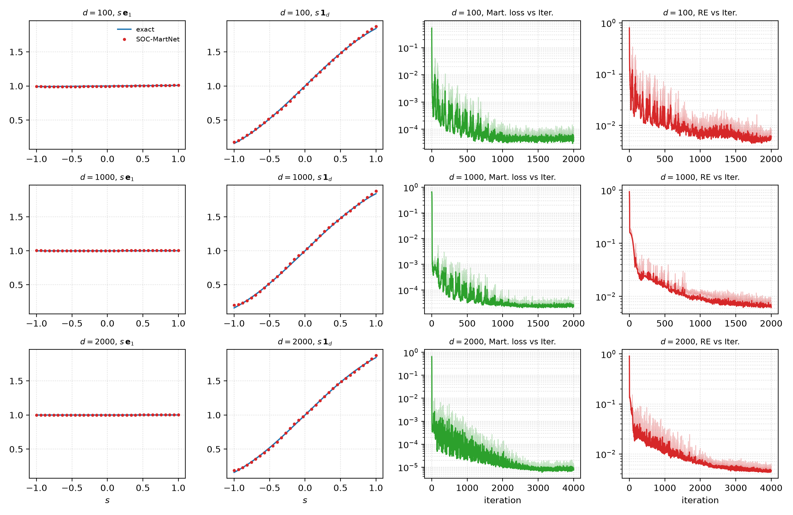
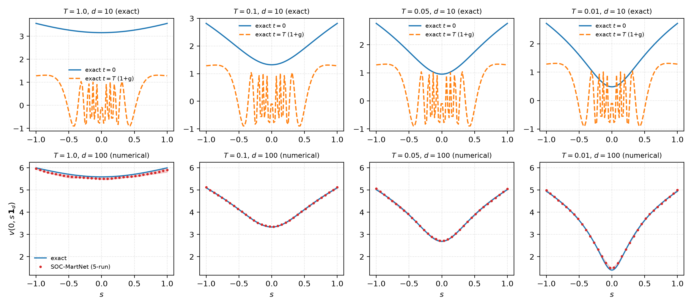
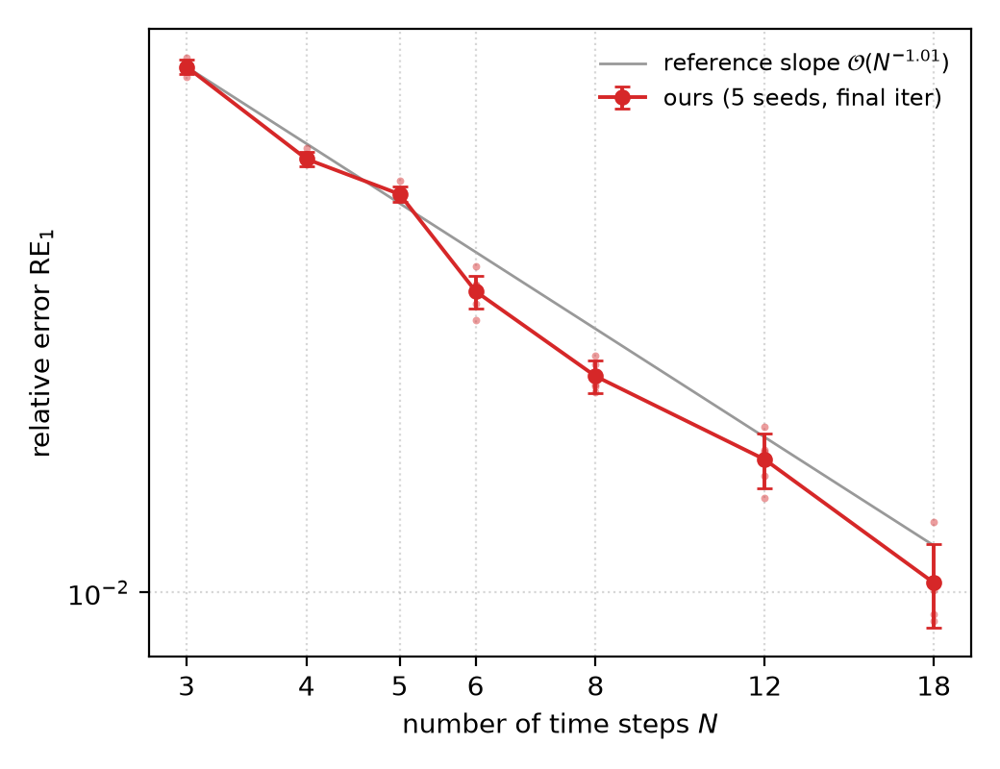
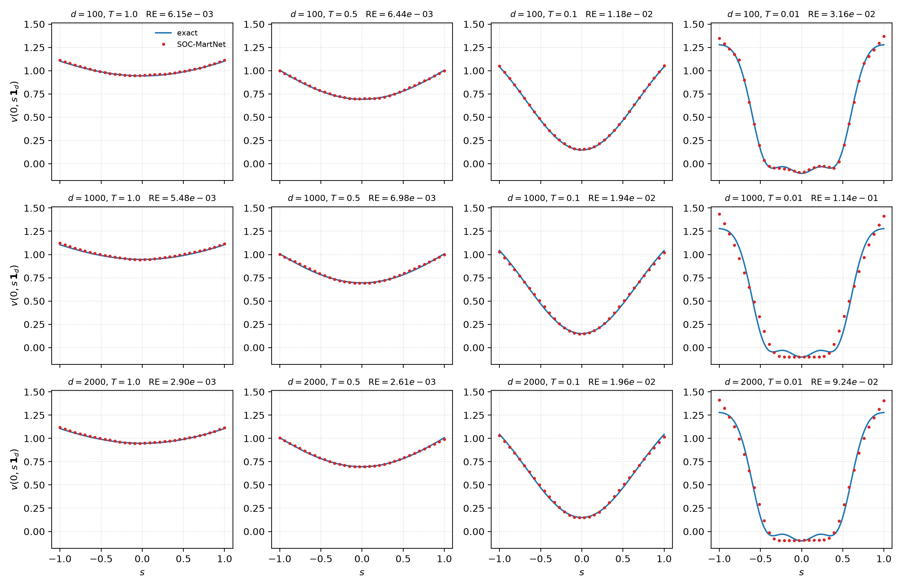
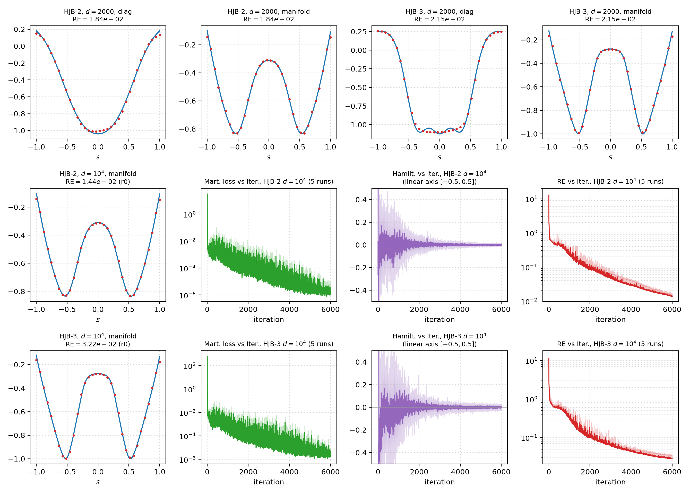
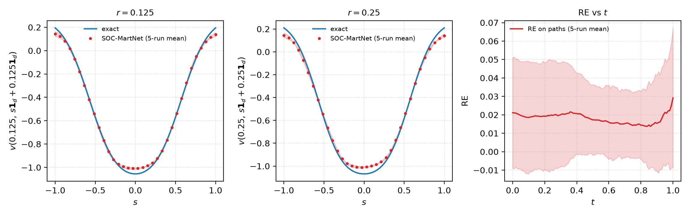
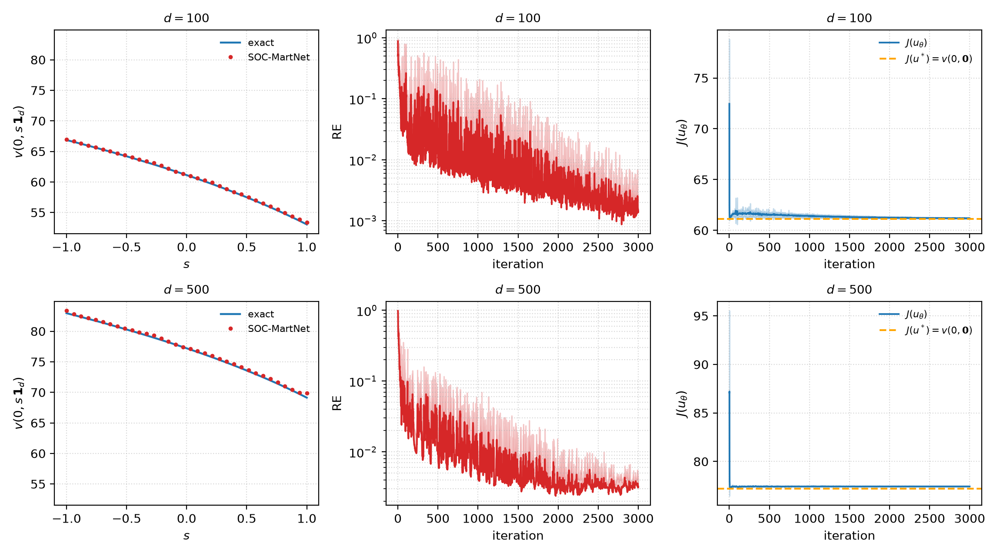
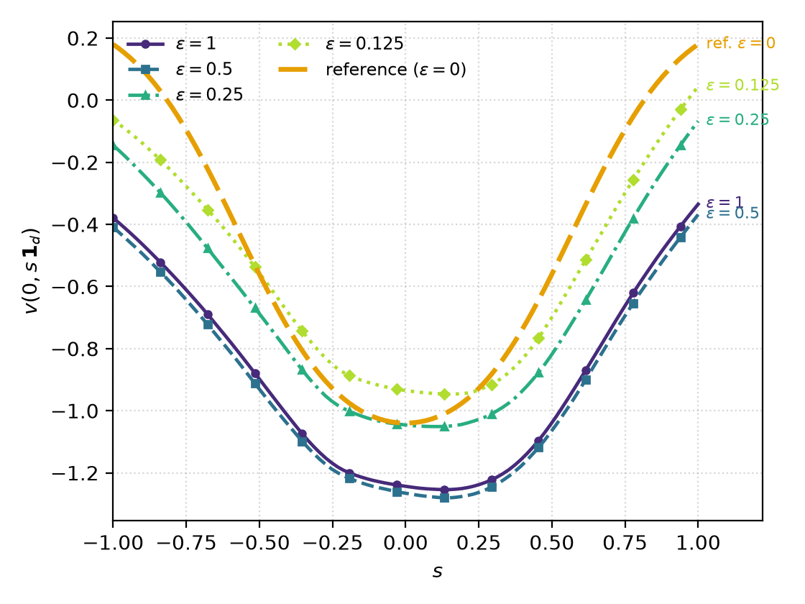

The notation below follows the conventions of paper §4. Networks: \(u_{\alpha}\), \(v_{\theta}\), \(\rho_{\eta}\) denote the control / value / adversarial networks; \(W_{h}\) is the hidden width (default 6 hidden layers of \(d+10\) ReLU units; table shorthand w256 = \(W_{h}=256\), wd10 = \(W_{h}=d+10\)); \(r\) is the output dimension of \(\rho_{\eta}\) (default 600). Training: \(I\) is the number of iterations; \(N\) the number of time steps (default 100); \(T\) the terminal time (default 1); \(M\) the total number of sample paths (paper default \(10^{5}\); this reproduction uses \(10^{4}\), with \(6\times10^{3}\) for a few high-dimensional cells — see the parameter settings of each section); batch size \(|M_{i}|\) defaults to 256 (d≤1000) / 128 (d>1000); optimizer RMSProp; learning rates $$\delta_{1}=\delta_{2}=\delta_{0}\times10^{-3}\times0.01^{\,i/I},\qquad \delta_{3}=10^{-2}\times0.01^{\,i/I},\qquad i=0,1,\cdots,I-1,$$ where \(\delta_{0}=3d^{-0.5}\) (d≤1000) and \(3d^{-0.8}\) (d>1000); \(\lambda\) is initialized at 10 with learning rate \(\delta_{4}=10\) and upper bound \(\bar{\lambda}\); \(J=2K=2\). Throughout this report \(\mathrm{lr}_{u}\) / \(\mathrm{lr}_{\rho}\) abbreviate the levels of \(\delta_{1}=\delta_{2}\) / \(\delta_{3}\).
Error (paper definition): $$\mathrm{RE}:=\Big(\textstyle\sum_{x\in D_{0}}\bigl|\hat v(0,x)-v(0,x)\bigr|\Big)\Big/\Big(\textstyle\sum_{x\in D_{0}}\bigl|v(0,x)\bigr|\Big)$$ that is, the relative \(L^{1}\) error (paper Table 1 uses the single-point convention \(D_{0}=\{x_{0}\}\); §4.3 of the paper denotes it \(\mathrm{RE}_{1}\)); the relative \(L^{\infty}\) error is defined as $$\max_{x\in D_{0}}\bigl|\hat v(0,x)-v(0,x)\bigr|\Big/\max_{x\in D_{0}}\bigl|v(0,x)\bigr|.$$This report uses final-iteration values; SD denotes standard deviation; in the history panels Mart. Loss = \(|G|^{2}\) and Hamilt. follows the paper definition. Reference solutions are the analytic or high-accuracy reference solutions of each problem (the top row of §4.2 uses a Cole–Hopf \(10^{6}\)-sample reference; §4.7 uses the \(\varepsilon=0\) reference solution).
| d | 100 | 1000 | 2000 |
|---|---|---|---|
| RE (5-seed) | 6.16e-3 ± 1.24e-3 | 6.54e-3 ± 0.68e-3 | 4.54e-3 ± 0.57e-3 |
Hardware: single RTX 4090 GPU.
This subsection of the paper reports illustrative results (no printed numeric anchor). All 12 panels (solution curves + Mart loss / RE histories) are rendered:

figures/fig1_linear.csv)Parameter settings: linear equation, d∈{100, 1000, 2000}, N=100 time steps, I=2000 (4000 for d=2000), M=10⁴ (6000 for d=2000), path renewal 0.2, fp32, seeds 0–4; full command lines in
experiments/sec41_linear_parabolic.sh.
| T | 1 | 0.1 | 0.05 | 0.01 |
|---|---|---|---|---|
| RE (5-seed) | 1.46e-2 ± 0.27e-2 | 3.24e-3 ± 0.59e-3 | 5.64e-3 ± 0.69e-3 | 2.03e-2 ± 0.51e-3 |
Hardware: single RTX 4090 (d=100 numerical row); the d=10 reference curves (top row) were produced on an A100.
Paper Fig. 2 (2×4 panels): top row, d=10 exact-solution reference; bottom row, d=100 numerical solution (mean ± 2SD).

figures/fig2_semilinear.csv)Parameter settings: semilinear equation, d=100, T∈{1, 0.1, 0.05, 0.01}, N=100, I=2000,
M=10⁴, path renewal 0.2, fp32, seeds 0–4 (top-row reference uses the d=10 analytic convention); full command lines in
experiments/sec42_semilinear.sh.
| N | 3 | 4 | 5 | 6 | 8 | 12 | 18 |
|---|---|---|---|---|---|---|---|
| Paper anchor | 6.44e-2 | 4.48e-2 | 3.33e-2 | 2.66e-2 | 2.00e-2 | 1.46e-2 | 1.03e-2 |
| This reproduction (5-seed) | 7.29e-2 | 5.15e-2 | 4.51e-2 | 3.12e-2 | 2.26e-2 | 1.65e-2 | 1.04e-2 |
| Ratio | 1.13 | 1.15 | 1.36 | 1.17 | 1.13 | 1.13 | 1.005 |
Hardware: single RTX 4090 GPU.
The error metric is the paper's notation \(\mathrm{RE}_{1}\) (relative \(L^{1}\) error). The log–log slope of this reproduction is −1.087; the paper's reference slope is \(O(N^{-1.01})\). Paper anchor values in the table are displayed to two significant digits; the ratio column is computed from the unrounded anchors.

figures/fig3_time_convergence.csv; paper anchor values in the table above)Parameter settings: LinearSinAC equation, d=100, N∈{3,4,5,6,8,12,18}, I=3000 (N≤5) /
6000 (N≥6, the paper's two-tier convention), M=10⁴, path renewal 0.2, fp32, seeds 0–4; full command lines in
experiments/sec43_time_convergence.sh.
| d \ T | 1 | 0.5 | 0.1 | 0.01 |
|---|---|---|---|---|
| 100 | 6.15e-3 | 6.44e-3 | 1.18e-2 | 3.16e-2 |
| 1000 | 5.48e-3 | 6.98e-3 | 1.94e-2 | 1.14e-1 |
| 2000 | 2.90e-3 | 2.61e-3 | 1.96e-2 | 9.24e-2 |
Hardware: single A100 GPU.
Parameter settings: HJB-1 with oscillatory terminal (\(\varepsilon_{0}=0.1\pi\)),
d∈{100,1000,2000}×T∈{1,0.5,0.1,0.01}, I=1000, M=10⁴, path renewal 0.2, fp32, single run (as in the paper's repeat convention); \(\bar{\lambda}\)=1000 (100 for d≥1000 with T=0.01, per the paper text); full command lines in
experiments/sec44_fig4_hjb1.sh.

figures/fig4_hjb1_tscan.csv)| Cell | RE (this reproduction) |
|---|---|
| HJB-2 d=2000 | 0.0184 |
| HJB-3 d=2000 | 0.0215 |
| HJB-2 d=10⁴ | 0.01387 ± 0.00086 |
| HJB-3 d=10⁴ | 0.02838 ± 0.00359 |
Hardware: A100 (the d=10⁴ batch used 8-GPU DDP).
This subsection of the paper reports illustrative results (no printed numeric anchor); the table above lists the final values of this reproduction. Protocol notes: the shaded band in paper Fig. 5 reflects five independent runs; here the two d=2000 rows are single runs and the two d=10⁴ rows use 5 seeds. The learning rates, iteration count, and batch size are not printed in the paper; the values used here are given in the parameter settings below.
Parameter settings: d=2000 — I=8000, \(\bar{\lambda}\)=1000, \(\mathrm{lr}_{u}\)=2.744e-5 and
\(\mathrm{lr}_{\rho}\)=2.744e-4 (4× the base), M=10⁴, single run; d=10⁴ — I=6000, \(W_{h}\)=10010, batch 64, \(\mathrm{lr}_{u}\)=7.571e-6 and \(\mathrm{lr}_{\rho}\)=7.571e-5 (4× the base), M=10⁴,
seeds 0–4. Full command lines in experiments/sec44_fig5_hjb23.sh.

figures/fig5_hjb_highdim.csv)| Metric | This reproduction (5-seed) | Paper reference |
|---|---|---|
| RE at end of training | 0.02062 ± 0.00172 | illustrative result, no printed numeric anchor |
| Shift-line |Δv| (r = 0.125 / 0.25) | 0.0172 / 0.0308 | — |
| Path RE, final value | 0.0292 | — |
Hardware: A100 (seeds 1–4) and RTX 4090 (seed 0).
The shift-line |Δv| is the mean of |Δv| over a 100-point grid on s∈[0,1] (not the maximum); all values in the table are 5-seed means.
Parameter settings: HJB-2 (\(\varepsilon_{1}=0.2\)), d=1000, I=8000, M=10⁴, path renewal 0.2, \(\bar{\lambda}\)=10,
\(\mathrm{lr}_{u}\)=4.777e-5 and \(\mathrm{lr}_{\rho}\)=4.777e-4, fp32, seeds 0–4; the evaluation covers both the shift-line pointwise and the path metrics (--eval-ptx /
--eval-path-re). Full command lines in experiments/sec45_domain_validity.sh.

figures/fig6_domain_validity.csv)Parameter settings: ShiftTarget equation (log-form terminal). Both rows use I=3000,
M=10⁴, \(\bar{\lambda}\)=1000, fp32, seeds 0–4; SD is the sample standard deviation (ddof=1; the summary CSVs under figures/ store the population standard deviation — the two differ by a factor \(\sqrt{5/4}\)). Full command lines in the §4.6 rows of
experiments.csv and in experiments/sec46_shifted_target.sh.
| d | RE (5-seed) | Gap of \(J(u)\) to the theoretical lower bound \(J(u^{*})\) |
|---|---|---|
| 100 | 1.45e-3 ± 0.44e-3 | 0.11% |
| 500 | 3.23e-3 ± 0.51e-3 | 0.29% |
Hardware: single A100 GPU.
Protocol notes: the hyperparameters used for the two rows differ from the paper text — the paper text prescribes I=1000 (a control batch under that setting is retained in experiments/sec46_shifted_target.sh), whereas both rows here use I=3000; the d=100 row additionally uses strengthened adversarial learning rates (\(\mathrm{lr}_{u}\)×4 = 1.2e-3 and
\(\mathrm{lr}_{\rho}\) = 40×\(\mathrm{lr}_{u}\) = 4.8e-2, path renewal fraction 0.1), while the d=500 row uses the standard convention
(\(\mathrm{lr}_{\rho}\) = 10×\(\mathrm{lr}_{u}\), renewal fraction 0.2).
Paper Fig. 7 consists of: diag curves + RE history (log axis, one-sided mean+2SD band) + \(J(u)\) history (linear axis, mean±2SD); the reproduction is shown in Fig. 7.

figures/fig7_shifted_target_summary.csv)| ε | 1 | 1/2 | 1/4 | 1/8 |
|---|---|---|---|---|
| RE vs ε=0 reference (5-seed) | 1.743 ± 0.006 | 0.823 ± 0.005 | 0.370 ± 0.005 | 0.203 ± 0.010 |
Hardware: single A100 GPU.
Paper Fig. 8 shows solution-curve families for decreasing ε (with HJB-2 = ε=0 as reference); in this reproduction the \(\varepsilon=\tfrac{1}{8}\) family has mean −0.569 (reference −0.5).
Parameter settings: HJB-2 ε-perturbation family, d=1000, ε∈{1, 1/2, 1/4, 1/8}, I=4000, M=10⁴,
path renewal 0.2, \(\bar{\lambda}\)=1000, fp32, seeds 0–4. Full command lines in experiments/sec47_epsilon.sh.

figures/fig8_epsilon.csv)Final reproduction protocol = equal-time comparison: MartNet is run within the runtime budget of the DeepBSDE entries reported in paper Table 1 (RT column), after which the two errors are compared. Network and hyperparameters follow the paper text; the iteration count I of each cell is the time budget divided by the per-iteration cost measured with this package.
| Cell | I | RE, this reproduction (5-seed) | DeepBSDE printed | Ratio | RT (s), this reproduction | DeepBSDE RT (s), printed |
|---|---|---|---|---|---|---|
| d100 w256 | 3200 | 1.67e-3 ± 4.71e-4 | 3.23e-3 | 0.52× | 72.3 | 73 |
| d300 w256 | 3300 | 6.50e-4 ± 7.80e-4 | 1.18e-3 | 0.55× | 89.2 | 90 |
| d500 w256 | 4600 | 1.07e-3 ± 6.24e-4 | 1.05e-3 | 1.02× | 129.3 | 116 |
| d800 w256 | 4800 | 2.36e-3 ± 3.65e-3 | 2.54e-3 | 0.93× | 155.4 | 145 |
| d1000 w256 | 4900 | 9.23e-4 ± 5.62e-4 | 1.86e-3 | 0.50× | 169.9 | 170 |
| d100 wd10 | 3500 | 1.79e-3 ± 1.59e-3 | 2.86e-3 | 0.63× | 52.1 | 53 |
| d300 wd10 | 3500 | 5.12e-4 ± 4.02e-4 | 3.27e-4 | 1.57× | 87.2 | 103 |
| d500 wd10 | 3500 | 1.98e-3 ± 1.36e-3 | 6.41e-4 | 3.09× | 167.6 | 184 |
| d800 wd10 | 3000 | 2.43e-3 ± 1.61e-3 | 1.28e-3 | 1.90× | 328.9 | 386 |
| d1000 wd10 | 4100 | 1.47e-3 ± 1.07e-3 | 3.77e-3 | 0.39× | 603.6 | 615 |
Hardware: single A100 GPU (both the reproduction and the paper's reported runs).
Ratio = 5-seed mean of this reproduction / DeepBSDE printed value. RT = cumulative training wall-clock time (rt column of the training CSV), 5-seed mean; the printed DeepBSDE RT is the time budget of this protocol (the paper's reported single-A100 runtime). Realized runtimes are 85%–111% of the corresponding budgets. Per-seed values are in results/t1e_final_table.csv. The largest error ratio in the table is 3.09×, the geometric mean is 0.89×, and 6/10 cells are below 1×.
Protocol notes: deviations from the printed parameters — (i) iteration count I: the paper Table 1 caption states I=1000, whereas this reproduction uses 3200–4900 per the equal-time budget (derivation in the intro of this section); (ii) \(\mathrm{lr}_{\rho}\): the paper text prescribes a flat 1e-2; the five low-dimensional cells here keep 1e-2, and the five high-dimensional cells use the relative convention 10×\(\mathrm{lr}_{u}\)
(\(\mathrm{lr}_{u}\) for the w256 d1000 cell); (iii) batch size: the paper §4 opening tiers it by dimension as 256/128, whereas this reproduction uses 128 uniformly. Per-cell values in results/t1e_final_table.csv.
Parameter settings: HJB-2 (\(\varepsilon_{1}=0.2\)), point evaluation x₀=0, networks with h=4 (paper §4.8 text:
“four hidden layers, W_h units”), \(W_{h}\in\{256,\ d+10\}\), rho network r=600 (paper default),
batch=128 (uniform across the table), \(\mathrm{lr}_{u}=3\times10^{-3}\,d^{-0.5}\) (paper §4 opening learning rate), \(\bar{\lambda}\)=1000,
M=10⁴, path renewal 0.2, fp32,
seeds 0–4, single GPU; per-cell \(\mathrm{lr}_{\rho}\) and I in results/t1e_final_table.csv.
Full command lines in experiments/table1_equaltime.sh (50 jobs).
The reproduction protocol uses a uniform batch size of 128 (identical across all 20 cells, making the table comparable across dimensions and GPU counts).
Parameter settings: HJB-3 (\(\varepsilon_{1}=0.1\)), \(W_{h}=d+10\), I=6000, M=10⁴, path renewal 0.2,
\(\bar{\lambda}\)=1000, fp32, single run (as in the paper's repeat convention), GPU counts {1,2,4,8} (DDP), batch = 128.
Full command lines in the Table-2 rows (uniform 128) of experiments/experiments.csv and in
experiments/table2_runtime.sh.
| GPUs \ d | 100 | 500 | 800 | 1,000 | 2,000 |
|---|---|---|---|---|---|
| 1 × A100 | 111.4 (1.0×) | 409.7 (1.0×) | 961.0 (1.0×) | 1299.5 (1.0×) | 4811.7 (1.0×) |
| 2 × A100 | 136.1 (0.8×) | 230.4 (1.8×) | 517.5 (1.9×) | 701.3 (1.9×) | 2500.8 (1.9×) |
| 4 × A100 | 150.4 (0.7×) | 151.2 (2.7×) | 295.5 (3.3×) | 387.6 (3.4×) | 1354.1 (3.6×) |
| 8 × A100 | 152.1 (0.7×) | 155.6 (2.6×) | 194.1 (5.0×) | 235.3 (5.5×) | 773.8 (6.2×) |
Hardware: A100 (DDP with the GPU count listed per row; the printed values are the paper's reported A100 runs).
The table layout matches paper Table 2 (rows = GPU count, columns = dimension). Format: RT in seconds (parenthesized value = DDP speedup = rt(g1)/rt(gk)); RT = cumulative training wall-clock time (rt column of the training CSV); the printed values and this reproduction both ran on A100 GPUs. Full data including the RE column in results/t2b_fix_agg.csv (per-run final-row extract: results/t2b_raw_final.txt). Cell-by-cell ratios against the paper's printed values: 0.53–1.06
(0.96–1.00 for the d2000 column). DDP speedup pattern:
2.6×–6.2× on 8 GPUs for d500–d2000, flat for d100.
This directory is self-contained: source code + command lines of all experiments + reference values + figures and plotting scripts. Directory layout:
repository root (= the workdir)/
├── REPORT.html # this report
├── code/SOCMartNet-v3-refactored/
│ # reproduction code: entry run.py + the socmartnet package + tests/validation_anchors/
├── slurm/ # frozen-copy submission channel (submit_job.sh + run_one.slurm)
├── experiments/
│ ├── experiments.csv # per experiment family: section / hardware / seeds / representative jobid / command-line template
│ ├── table1_equaltime.sh … table2_runtime.sh
│ │ # 10 single-case reproduction scripts (run on demand; each header states the paper content covered, the reference values, and the expected CSV line count)
│ ├── smoke_test.sh # quick end-to-end check (prints SMOKE OK)
│ ├── common.sh # shared harness (WORKDIR / submit(); each single-case script sources it)
│ └── reproduce_all.sh # full driver (invokes the 10 single-case scripts in order; parameters taken verbatim from the job-log headers that produced the results)
├── results/ # reference values: Table1/Table2/§4.1-4.3/§4.4 aggregate CSVs + final-row extracts of this reproduction
│ └── final_rows.csv # final-row extract of the runs behind the shipped results (jobid / stem / line count / final values)
├── katex/ # local KaTeX rendering library (formula rendering, works offline)
├── figures/ # figure PNGs + per-figure summary-data CSVs (pointwise curve data live in the archived job CSVs)
└── plots/ # plotting and aggregation scripts (plot_*.py / build_*.py)Reproduction steps (any A100-class SLURM cluster; the numbers in this package were produced on A100 and RTX 4090 GPUs):
# 1) This repository doubles as the workdir: clone it on your cluster and work at its
# root -- submit_job.sh expects exactly this layout (code/SOCMartNet-v3-refactored/
# + slurm/ + experiments/). Adapt the site template slurm/run_one.slurm:
# #SBATCH account/partition + PY variable
# 2) Submit: run the single-case scripts on demand (experiments/table1_equaltime.sh … table2_runtime.sh),
# or bash experiments/reproduce_all.sh for the full suite; below, the §4.4 paper-Fig. 5 d1e4 formal batch as an example
export SBATCH_PARTITION=batch SBATCH_GPUS=8 SBATCH_TIMELIMIT=1-00:00:00
bash slurm/submit_job.sh fig5_hjb2_d1e4_s1 \
--example hjblq --dim 10000 --delta0 0.2 --preset sisc --dtype float32 \
--max-iter 6000 --num-paths 10000 --renew-frac 0.2 --fd-residual \
--lam-bar 1000 --controlled-pool --width 10010 \
--batch-size 64 --lr-uv 7.5714866e-06 --lr-rho 7.5714866e-05 \
--seed 1 --tag fig5_hjb2_d1e4_s1
# 3) Success check: sacct COMPLETED alone is not sufficient; the CSV line count is authoritative (6000 iterations → 6002 lines)
# 4) Compare against reference values: aggregate CSVs and final_rows.csv under results/Environment: Python 3.12 everywhere; PyTorch 2.11.0+cu128 (A100 cluster) / 2.6.0+cu124 (RTX 4090 cluster); RMSprop; fp32; multi-GPU DDP. Accuracy sections use ≥5 seeds (0–4) per cell; the single-run exceptions are paper Table 2, all 12 cells of paper Fig. 4, and the two d=2000 rows of paper Fig. 5.